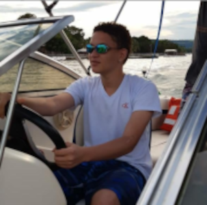

18 anos,solteiro,natural de Franca/SP

Sei que vou sofrer
a eterna desventura de viver,
à espera de viver ao lado teu,
por toda a minha vida.
(Vinicius de Moraes)
Me chamo Vinícius,nascido em Franca/SP, no dia 08/04/2003,gosto de jogar video game,já competi e ganhei dinheiro jogando.E o meu sonho principal ,eu quero me formar em Designer de Games,desenvolver analisar e criar.
Tenho poucos curriculos que envolva computação,mas pretendo mudar isso nos proximos anos,sou formado em inglês,consigo entender muito bem,mas falar bem pouco(tenho bastante vergonha a respeito),ja competi também nadando,representava o Poli esportivo,parei durante um tempo porque teve alguns problemas na piscina.E atualmente eu estudo Analise e Desenvolvimento de Sistemas na FatecFranca/SP.